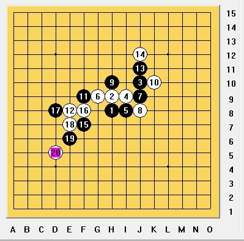
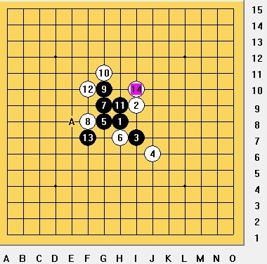
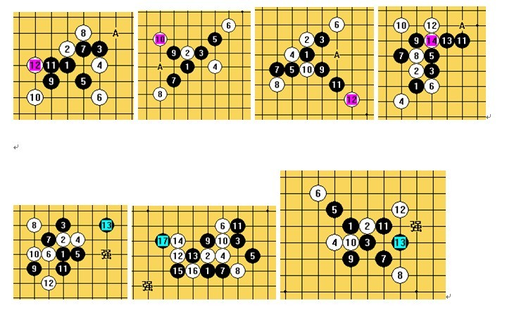

炫飞☆混混（黄金贤）老师谈棋感
#1 炫飞☆混混（黄金贤）老师谈棋感 作者：冰雪笑醉 发表时间：2012-9-11 12:30:19
混混谈棋感
大家常说谁谁谁棋感很好，哪个棋感很差，有没有想过究竟什么是棋感？
说得直观一点，棋感嘛，就是对现有局面选点的第一感。棋感好，自然是往往第一感就是最强，棋感差，就是选点有问题。下边举个例子就能懂了。
上边 3 个图，左边是一个例子，到了黑棋要怎么走呢？如果你棋感好，那么应该会想到中间的那个 9 ，如果你第一感是右边那个 9 ，可以说棋感一般。为什么这样说呢？中间图的 9 攻击力非常强，你是看不出最强在哪里的，要经过一段时间的计算，而右边图很明显防在 5 下边。
其实说白了，棋感就是瞬间选点能力，强调时间很短，不加分析的第一感。在混混的分析中，选点又可以细分为 3 种： 1. 杀棋线路选点； 2. 攻防选点； 3. 中局选点。
1. 杀棋线路选点
局面有杀的时候，进攻选点问题，是直接活三冲四，还是做 V 。看下边这个例子：
能杀吗？怎么杀？很简单，如下图
这里是要说明，对于这种形状，要有第一手是跳三进行连接的棋感，后续变化一般都差不多。
再来一个复杂些的例子：
大家对蒲月可是再熟悉不过了，这个经典杀法还记得吗？如下：
这里的棋感说的是对连接的次序、还有该活三还是跳三、怎么冲四、连接哪里的棋感。
下边是雨月的应用：
怎么杀？请读者自己验证。
上边讲的是 VCT 连接选点问题，下边是做杀选点，也是 VCT 的精华所在
这个局面到黑棋，怎么杀？
这是很多初学者会想到的线路，冲四活三，直接明了，这样杀没问题；但这个局面还有一种杀法
这个 11 做杀后，有 A 、 BC 、 ba 三种杀法，无解，简洁。
这个局面，黑棋怎么杀？如下图 a 点做杀，有 3 套杀法，白棋无解。
其实，上图的例子都是最基本的做杀形状，大量熟悉做杀形状（叫 V 形状）可以大大提高算杀速度。从这两个对比中，大家已经明白了在有杀的局面下，对杀棋形状的熟悉程度会直接导致杀棋线路选点的优劣，影响杀棋的复杂程度。这也是棋感的一种体现。
2. 攻防选点
这个分为攻击选点和防守选点。其实两者是相辅相成的，必胜型积累较多的棋手这种选点能力比较强。
攻击选点 ，就是做棋选点。一般大家说的棋感指的就是这个，第一感的做棋很强。下边举个例子：
看这个例子，雨月的变化，到黑了，哪里做棋强？
左边两个图是初学者比较容易想到的，可惜攻击力都不够，能防住。
下边这个是正解
这个 13 拓展空间非常好，下图是最强后续
这个形状在花月里也有应用，如下图。

7 走 a 点很快取胜。可若没积累过，想到此点很难。
可以再来一个例子，也是雨月的，如下图
该 11 很强，相信很多棋手都熟悉这个形状。
在溪峡月中也有应用，如下图
不过这个 11 的后续变化比雨月要复杂。
其实，一个棋手的棋感就体现在这些选点中，如果你没有这种形状的选点直觉，现场计算的话，且不说精确度，也要耗费很多精力，而且对后续的变化并不了解，如果积累过相关形状，也了解后续杀法，就可以大大提高计算效率。
防守选点 ，就是对一些局部形状或者做杀的最强防。举一个局部形状的例子：
上边已经介绍过，这个 9 攻击力很强，可是有唯一防，如下图
这样之后黑棋在理论上不能胜。
再举一个例子：
这个 8 之后黑棋的杀法如下，有些复杂：
或
下边是一种比较高级的在中局的运用：
这是疏星的一个变化，白 16 抢了黑的要点，现在到黑棋，要怎么走呢？疏星中局中常会遇到类似疑难局面，这里黑棋其实可以考虑在右边过渡，也可以在左边走，为了说明这种防守选点应用，我们姑且选择在左边走。
如果对形状有些印象可是并不深入、棋感并不是特别好的棋手，很可能会这样走：
17 、 19 套棋型，可是到了 20 强防后由于空间不够，原来的杀法不成立， 20 后黑棋并不好。所以对这种防守选点棋感很好的棋手，他在思考的时候 17 开始到 20 只是一瞬间的事，所以他选择了这个 16 ，先占黑棋要点，阻止黑往下发展。这就是在中局中的应用。至于 17 究竟应该怎么走，有兴趣的朋友再和我交流
上边是局部形状的防守选点，接下来看看做 V 的防守选点：
这个叫杀形状，一般都防哪里最强呢？
A 点最强。虽然在这个局部有杀，但很多时候在其他局面没杀。如果下棋的时候遇到像 11 的做 V ，一般 A 点杀掉这个 VCT 就成立了。一般很多 VCT 比较困难是因为中间有做杀，做一个杀至少有 3 、 4 个防，然后再做一个杀又有至少 3 、 4 个防，分支很多，让人头晕，可是棋感好的人一眼就知道做 V 的强防在哪里，只算强防，计算可不 是一般地快。
3. 中局选点
这个部分的选点例子仅供参考，因为很多中局的棋没有所谓强与不强，更多的是一种理念。这种中局选点棋感好，就不是选点强的意思了，而是选点多样化，对一个局面有多种下法。如果一个棋手这种棋感好，那么他可以根据对手的风格从多种选点中选择最优的。
下边举个例子：
这是疏星一打的一个变化，到
13
，白棋怎么防。
如果对手的攻击力不行，或者对中局的处理能力不够好， 14 可以这样走
14 占了左边的要点后，逼黑从右边过渡下来，逼黑从右边攻。
如果对手攻击力很强，那就保守些，防着好了：
14 防住后，白左边一手能出 VCT （例如 8 左上、 14 左边两格），而黑下边一手不能出 VCT ，也就是在下边黑棋不能拿到先手，只能从左上攻，白一直跟着防就好。
再举些例子：

这是疏星 2 打的一个变化，行至 20 ，黑怎么走好呢？现在有很多选择
可以这样：
把白右下角的关键点防了，诱攻。白棋在左下有一定空间，也有一个冲四。如果你有信心防住，并且能防出个活 2 来，也可以这样冒险。这种下法适合攻击力比较弱的对手，而如果 21 走其他地方，人家老老实实防了最后也就和棋。所以这也是一种选择。
这样也可以：
如果对手很强大，就把他防个干净，往着和棋走。
那么，怎样才能 提高棋感 呢？
1. 对于杀棋线路和攻防选点，要提高棋感，只能通过大量积累。前者通过大量积累做 V 手法，积累各种局面做 V 杀法、以及做 V 之后最强防。做 V 举几个例子 ：

积累足够多做 V 手法之后，你会发现自己的算力和以前已经不是一个层次了。
后者通过大量积累必胜型，黑优局面的处理，局部最强攻和最强防，这样攻防选点就没什么问题了。例如：

最强防：
最强防

2. 中局选点，这个必须经过大量疏星和瑞星的对局去体会。提高棋感非常难，要求对棋的理解非常高，经过无数次的败局和总结方能提高，例子在前边中局选点那里。
［此帖子已被 冰雪笑醉 在 2012-9-11 13:02:37 编辑过］
［ 小丸.net 于 2012-9-11 14:20:02 时奖励此帖[金币加 100 威望加1］
［ 山城刀客 于 2012-9-11 14:40:31 时花20金币送鲜花一朵］
［ 山城刀客 于 2012-9-11 14:40:31 时花20金币送鲜花一朵］
［ 山城刀客 于 2012-9-11 14:40:31 时花20金币送鲜花一朵］
［ 山城刀客 于 2012-9-11 14:40:31 时花20金币送鲜花一朵］
［ 山城刀客 于 2012-9-11 14:40:31 时花20金币送鲜花一朵］
［ 簡單 于 2012-9-11 18:06:09 时奖励此帖[金币加 100 威望加1］
［ 簡單 于 2012-9-11 18:07:16 时花20金币送鲜花一朵］
［ 簡單 于 2012-9-11 18:07:16 时花20金币送鲜花一朵］
［ 簡單 于 2012-9-11 18:07:16 时花20金币送鲜花一朵］
［ 簡單 于 2012-9-11 18:07:16 时花20金币送鲜花一朵］
［ 簡單 于 2012-9-11 18:07:16 时花20金币送鲜花一朵］
［ 簡單 于 2012-9-11 18:07:16 时花20金币送鲜花一朵］
［ 簡單 于 2012-9-11 18:07:16 时花20金币送鲜花一朵］
［ 簡單 于 2012-9-11 18:07:16 时花20金币送鲜花一朵］
［ 簡單 于 2012-9-11 18:07:16 时花20金币送鲜花一朵］
［ 簡單 于 2012-9-11 18:07:16 时花20金币送鲜花一朵］
［ 梧桐风 于 2012-9-11 18:48:54 时花20金币送鲜花一朵］
［ 梧桐风 于 2012-9-11 18:48:54 时花20金币送鲜花一朵］
［ 梧桐风 于 2012-9-11 18:48:54 时花20金币送鲜花一朵］
［ 流逝 于 2012-9-12 13:31:42 时花20金币送鲜花一朵］
［ 流逝 于 2012-9-12 13:31:42 时花20金币送鲜花一朵］
［ 流逝 于 2012-9-12 13:31:42 时花20金币送鲜花一朵］
［ 流逝 于 2012-9-12 13:31:42 时花20金币送鲜花一朵］
［ 流逝 于 2012-9-12 13:31:42 时花20金币送鲜花一朵］
［ 流逝 于 2012-9-12 13:31:42 时花20金币送鲜花一朵］
［ 流逝 于 2012-9-12 13:31:42 时花20金币送鲜花一朵］
［ 流逝 于 2012-9-12 13:31:42 时花20金币送鲜花一朵］
［ 流逝 于 2012-9-12 13:31:42 时花20金币送鲜花一朵］
［ 流逝 于 2012-9-12 13:31:42 时花20金币送鲜花一朵］
［ 潇洒 于 2012-9-12 15:00:30 时花20金币送鲜花一朵］
［ 潇洒 于 2012-9-12 15:00:30 时花20金币送鲜花一朵］
［ 潇洒 于 2012-9-12 15:00:30 时花20金币送鲜花一朵］
#2 Re:炫飞☆混混（黄金贤）老师谈棋感 作者：冰雪笑醉 发表时间：2012-9-11 14:57:44
 混混老师说以后会经常写写发表的
混混老师说以后会经常写写发表的
忽忽写了这么多，偶好好学习下
感谢混混老师~
［此帖子已被 冰雪笑醉 在 2012-9-11 15:06:32 编辑过］
#3 Re:炫飞☆混混（黄金贤）老师谈棋感 作者：掌棋宣传员 发表时间：2012-9-12 9:10:52
这么长的东西我居然有耐心看完了....说明写的真是太棒了~~
#4 Re:炫飞☆混混（黄金贤）老师谈棋感 作者：我爱棋 发表时间：2012-9-12 13:17:17
很有启发性的东西，不错
#5 Re:炫飞☆混混（黄金贤）老师谈棋感 作者：潇洒 发表时间：2012-9-12 15:00:12
写的不错。。支持下~
#6 Re:炫飞☆混混（黄金贤）老师谈棋感 作者：流逝 发表时间：2012-9-12 15:19:42
写了这么长呀，不错不错！